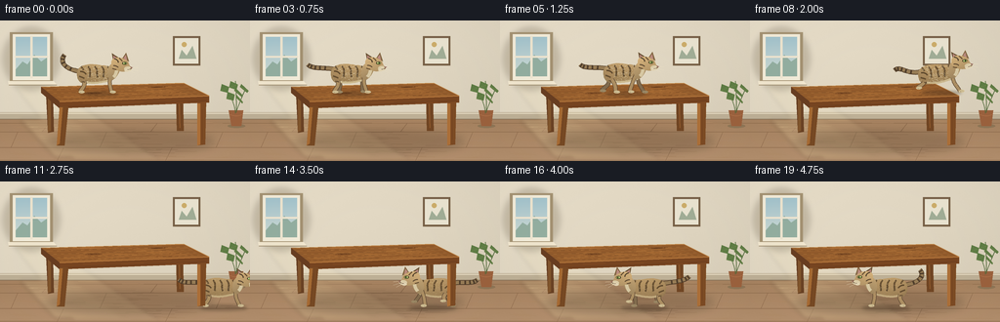

CODING AGENTS AS PIXEL WORLD MODELS
traex/GPT-6.1-Sol · dynamic_spatial_relationship_0010
点击播放 · 原生 RGB 像素
逐轮保存的候选
回放视频、检查图与代码变化。
每份候选均可单独播放。实际图片检查记录在下方工具轨迹中。
候选 01播放与检查图
点击播放 · 原生 RGB 像素

展开代码变化
--- 上一保存版本
+++ 本次保存版本
@@ -0,0 +1,326 @@
+"""Deterministic, hand-drawn procedural RGB animation (no source images)."""
+from pathlib import Path
+import math
+import numpy as np
+from PIL import Image, ImageDraw, ImageFilter
+import artifact_io
+
+ROOT = Path(__file__).resolve().parent
+S = 4
+W,H=256,144
+rng=np.random.default_rng(9182)
+
+def pt(p): return tuple(int(round(v*S)) for v in p)
+def box(b): return tuple(int(round(v*S)) for v in b)
+def poly(im, points, color): ImageDraw.Draw(im).polygon([pt(p) for p in points], fill=color)
+def line(im, points, color, width=1): ImageDraw.Draw(im).line([pt(p) for p in points],fill=color,width=max(1,round(width*S)),joint='curve')
+def ellipse(im, bounds, fill): ImageDraw.Draw(im).ellipse(box(bounds),fill=fill)
+def bezier(points,n=28):
+ points=np.array(points,float)
+ if len(points)==4:
+ return [(1-t)**3*points[0]+3*(1-t)**2*t*points[1]+3*(1-t)*t*t*points[2]+t**3*points[3] for t in np.linspace(0,1,n)]
+ return [(1-t)**2*points[0]+2*(1-t)*t*points[1]+t*t*points[2] for t in np.linspace(0,1,n)]
+def curve(im, points, color, width): line(im,bezier(points),color,width)
+def path_mask(size,segments):
+ mask=Image.new('L',size)
+ pts=[]
+ for seg in segments: pts += list(bezier(seg))
+ ImageDraw.Draw(mask).polygon([pt(p) for p in pts],fill=255)
+ return mask
+
+def soft_ellipse(im,bounds,color,blur):
+ layer=Image.new('RGBA',im.size)
+ ellipse(layer,bounds,color)
+ im.alpha_composite(layer.filter(ImageFilter.GaussianBlur(blur*S)))
+
+# Textured, sunlit interior. All textures are mathematical and deterministic.
+y,x=np.mgrid[0:H*S,0:W*S]
+xx=x/S; yy=y/S
+noise=rng.normal(0,0.8,(H*S,W*S))
+wall=np.zeros((H*S,W*S,3),float)
+for k,base in enumerate([221,211,190]):
+ wall[:,:,k]=base+9*(1-xx/W)+3*np.cos(yy/35)+noise
+floor=yy>=100
+for k,base in enumerate([166,130,96]):
+ wall[:,:,k]=np.where(floor,base+(yy-100)*.34+noise*1.1,wall[:,:,k])
+background=Image.fromarray(np.uint8(np.clip(wall,0,255))).convert('RGBA')
+# Subtle architectural trims.
+poly(background,[(0,94),(256,94),(256,101),(0,101)],(191,177,151,255))
+line(background,[(0,95),(256,95)],(230,218,193,255),.9)
+line(background,[(0,101),(256,101)],(137,117,92,255),.8)
+for fy in [105,114,130,143]:
+ line(background,[(0,fy),(256,fy)],(141,107,76,180),.4)
+for fy,xxs in [(105,[50,161]),(114,[18,109,228]),(130,[65,176])]:
+ for fx in xxs: line(background,[(fx,fy),(fx-7,fy+([9,16,14][[105,114,130].index(fy)]))],(142,107,77,150),.45)
+for i in range(95):
+ fx=rng.uniform(0,W); fy=rng.uniform(102,144)
+ curve(background,[(fx,fy),(fx+4,fy-.5),(fx+14,fy+.3),(fx+22,fy)],(175,137,99,95),.19)
+# Window alcove on the left, cool exterior and warm mullions.
+soft_ellipse(background,(3,7,61,71),(90,75,50,60),3)
+poly(background,[(10,12),(54,12),(54,65),(10,65)],(165,147,115,255))
+poly(background,[(13,14),(51,14),(51,61),(13,61)],(244,237,218,255))
+poly(background,[(16,17),(48,17),(48,57),(16,57)],(168,199,207,255))
+for iy in range(17,57):
+ line(background,[(16,iy),(48,iy)],(int(164+(iy-17)*1.1),int(196+(iy-17)*.6),int(205+(iy-17)*.2),255),1)
+poly(background,[(16,50),(23,42),(28,45),(35,35),(42,42),(48,38),(48,57),(16,57)],(148,175,161,255))
+line(background,[(32,16),(32,59)],(238,229,208,255),2.6)
+line(background,[(15,37),(49,37)],(239,230,209,255),2.1)
+poly(background,[(8,62),(55,62),(58,66),(9,66)],(243,232,208,255))
+line(background,[(9,66),(58,66)],(161,144,114,255),.7)
+# Diffuse shafts of sunlight and a pool on the floor.
+sun=Image.new('RGBA',background.size)
+poly(sun,[(14,66),(51,66),(164,143),(76,143)],(255,237,184,23))
+poly(sun,[(20,101),(72,101),(125,140),(56,140)],(255,236,183,36))
+background.alpha_composite(sun.filter(ImageFilter.GaussianBlur(2*S)))
+# Simple framed print, far wall: quieter than the main action.
+poly(background,[(177,16),(205,16),(205,46),(177,46)],(120,97,71,255))
+poly(background,[(179,18),(203,18),(203,44),(179,44)],(234,228,209,255))
+poly(background,[(183,39),(186,30),(191,36),(197,26),(201,39)],(162,174,151,255))
+ellipse(background,(186,22,191,27),(204,173,107,255))
+# A leafy houseplant on the right, tucked against the wall.
+ellipse(background,(233,106,251,110),(143,119,87,160))
+poly(background,[(234,92),(249,92),(247,108),(237,108)],(156,98,62,255))
+curve(background,[(235,96),(240,98),(244,98),(248,96)],(182,119,76,255),.6)
+for pts in [[(241,95),(240,82),(231,71)],[(242,93),(247,79),(251,71)],[(242,94),(242,76),(241,62)]]:
+ curve(background,pts,(81,106,58,255),.8)
+for cx,cy,rot in [(236,78,-.6),(230,70,-.5),(245,81,.7),(250,70,.5),(239,67,-.4),(244,74,.6)]:
+ p=[(cx-5*math.cos(rot),cy-4*math.sin(rot)),(cx-3,cy-5),(cx+5*math.cos(rot),cy+4*math.sin(rot)),(cx+3,cy+4)]
+ poly(background,p,(96,125,69,255)); line(background,[p[0],p[2]],(126,144,85,255),.35)
+
+# Table: visible top plane, front apron and four legs.
+def rear_table(im):
+ soft_ellipse(im,(47,113,219,135),(65,47,30,60),4.4)
+ poly(im,[(47,73),(54,73),(55,114),(49,115)],(105,65,36,255))
+ poly(im,[(49,75),(52,75),(52,113),(49,114)],(129,85,45,255))
+ poly(im,[(180,68),(187,69),(188,113),(181,113)],(113,70,36,255))
+ line(im,[(183,74),(184,110)],(145,91,46,255),1)
+
+def top_table(im):
+ poly(im,[(42,68),(188,64),(214,77),(61,83)],(146,91,44,255))
+ # Continuous board grain on the plane, perspective projected.
+ def uv(u,v): return (42+146*u+19*v,68-4*u+15*v-2*u*v)
+ for v in [.02,.21,.44,.67,.87,1]:
+ line(im,[uv(0,v),uv(1,v)],(100,58,28,255),.5)
+ line(im,[uv(0,v+.018),uv(1,v+.018)],(181,124,64,255),.3)
+ rr=np.random.default_rng(125)
+ for i in range(95):
+ u=rr.uniform(0,.85); v=rr.uniform(.01,.97); l=rr.uniform(.05,.23)
+ curve(im,[uv(u,v),uv(u+l*.35,v-.016),uv(u+l*.75,v+.02),uv(min(1,u+l),v)],(173,112,55,255),rr.uniform(.10,.24))
+ # Knots are concentric and flattened in the table plane.
+ for cu,cv in [(.3,.52),(.78,.24)]:
+ for r in [.022,.041,.060]:
+ pts=[uv(cu+math.cos(a)*r,cv+math.sin(a)*r*.64) for a in np.linspace(0,2*math.pi,64)]
+ line(im,pts,(111,66,32,230),.22)
+ line(im,[(42,68),(188,64),(214,77)],(196,141,80,255),.65)
+
+def front_table(im):
+ poly(im,[(61,83),(214,77),(214,84),(61,90)],(119,69,33,255))
+ poly(im,[(42,68),(61,83),(61,90),(42,74)],(104,62,34,255))
+ line(im,[(61,83),(214,77)],(195,131,68,255),1)
+ line(im,[(63,88),(212,82)],(90,51,27,255),.4)
+ for i in [85,124,169]: line(im,[(i,84.5),(i+23,83.6)],(152,86,39,255),.27)
+ # Front legs have tapered feet and a lit bevel.
+ poly(im,[(61,88),(70,88),(66,128),(58,128)],(119,73,36,255))
+ poly(im,[(61,89),(64,89),(61,126),(58,128)],(166,107,52,255))
+ poly(im,[(202,84),(211,83),(210,127),(202,128)],(125,75,36,255))
+ poly(im,[(202,85),(205,85),(205,127),(202,128)],(173,112,56,255))
+ line(im,[(207,91),(207,122)],(103,57,28,255),.35)
+ line(im,[(65,94),(62,123)],(98,56,28,255),.33)
+
+# Cat is constructed from anatomically related curves, with a repeatable fur field.
+CW,CH=112,72
+OX,OY=55,53
+catnoise=np.random.default_rng(73).normal(0,1,(CH*S,CW*S))
+
+def cat_frame(phase=0, speed=0, airborne=False, landing=False, idle=0):
+ im=Image.new('RGBA',(CW*S,CH*S))
+ def conv(p): return (p[0]+OX,p[1]+OY)
+ def L(points,col,width): line(im,[conv(p) for p in points],col,width)
+ def C(points,col,width): curve(im,[conv(p) for p in points],col,width)
+ def E(bounds,col): ellipse(im,(bounds[0]+OX,bounds[1]+OY,bounds[2]+OX,bounds[3]+OY),col)
+ def P(points,col): poly(im,[conv(p) for p in points],col)
+ def fur_shape(segments,base,bright=1):
+ segs=[[conv(p) for p in s] for s in segments]
+ mask=path_mask(im.size,segs)
+ gy,gx=np.mgrid[0:CH*S,0:CW*S]
+ localx=gx/S-OX; localy=gy/S-OY
+ light=1.06-.011*(localy+26)+.055*np.cos(localx/12)
+ color=np.stack([base[k]*light+catnoise*(2.3 if k==0 else 1.7) for k in range(3)],axis=-1)
+ out=Image.fromarray(np.uint8(np.clip(color,0,255))).convert('RGBA'); out.putalpha(mask)
+ im.alpha_composite(out)
+ return mask
+ bodybob=-1.0*speed*math.cos(phase*2)
+ by=bodybob
+ # The tail rises gently at rest and streams behind during the run.
+ if airborne:
+ tail=[(-19,-23+by),(-34,-20),(-40,-31),(-46,-26)]
+ elif speed:
+ tail=[(-19,-24+by),(-31,-26+by),(-41,-24-2*math.sin(phase)),(-46,-29-2*math.sin(phase))]
+ else:
+ tail=[(-18,-22),(-34,-23),(-41,-32),(-35,-39+math.sin(idle)*1.5)]
+ C(tail,(83,63,43,255),4.8)
+ C(tail,(152,125,86,255),3.6)
+ # Ring bands remain attached to the curved tail.
+ tarr=bezier(tail,80)
+ for q in [.28,.46,.64,.82,.95]:
+ idx=int(q*78); v=tarr[idx+1]-tarr[idx-1]; v=v/(np.linalg.norm(v)+1e-6); n=np.array([-v[1],v[0]])
+ L([tarr[idx]-n*1.8,tarr[idx]+n*1.8],(81,63,45,255),1.7)
+ # Four articulated legs. Far legs are slightly darker.
+ def leg(hip,end,front,far):
+ hx,hy=hip; ex,ey=end
+ knee=(hx+(ex-hx)*.4+(-1.7 if front else 4),hy+(ey-hy)*.5)
+ col=(130,108,78,255) if far else (173,143,99,255)
+ C([hip,knee,knee,(ex,ey-1.3)],(88,68,48,255),4.0 if front else 4.6)
+ C([hip,knee,knee,(ex,ey-1.3)],col,3.1 if front else 3.6)
+ E((ex-1.6,ey-2.2,ex+4.5,ey+.4),(154,135,100,255) if far else (205,188,146,255))
+ L([(ex+.4,ey-.7),(ex+.8,ey+.1)],(121,98,68,255),.35)
+ if not far:
+ C([(hx,hy+5),(hx+1.8,hy+5.7),(hx+2.4,hy+6)],(89,68,46,255),1.3)
+ ends=[]
+ for idx in range(4):
+ front=idx%2==1; far=idx<2
+ hx=(12 if front else -17); hy=(-20 if front else -17)+by
+ a=phase+(0 if front else math.pi)+(.95*math.pi if far else 0)
+ if airborne:
+ ex=hx+(-7 if not front else 7); ey=(-5 if not front else 2)
+ elif landing:
+ ex=hx+(4 if front else -3); ey=0
+ elif speed:
+ ex=hx+7.2*math.cos(a)*speed
+ ey=-max(0,math.sin(a))*6.2*speed
+ else: ex=hx+(1 if front else -2); ey=0
+ ends.append(((hx,hy),(ex,ey),front,far))
+ for args in ends[:2]: leg(*args)
+ # Rounded torso and belly silhouette, wider hips and a narrow shoulder.
+ body=fur_shape([
+ [(-22,-17+by),(-24,-29+by),(-11,-31+by),(4,-28+by)],
+ [(4,-28+by),(11,-28+by),(17,-25+by),(17,-19+by)],
+ [(17,-19+by),(14,-10+by),(3,-11+by),(-6,-11+by)],
+ [(-6,-11+by),(-14,-8+by),(-21,-9+by),(-22,-17+by)]
+ ],(167,137,92))
+ # Pale belly crescent.
+ C([(-14,-11.5+by),(-5,-8.5+by),(7,-12+by),(13,-13.5+by)],(201,180,134,220),2.0)
+ # Tabby flank stripes, slightly irregular and tapered.
+ for xx0,off in [(-16,1),(-9,0),(-2,1),(5,0),(11,2)]:
+ C([(xx0-2,-27+by),(xx0+2,-23+by),(xx0-1,-19+by),(xx0+off,-16+by)],(95,75,49,255),1.8)
+ C([(xx0-1.3,-26.3+by),(xx0+1,-23+by),(xx0-.7,-20+by)],(106,81,50,255),.7)
+ # Short, consistent guard hairs on the body, not a flickering noise overlay.
+ rr=np.random.default_rng(187)
+ for _ in range(290):
+ px=rr.uniform(-21,16); py=rr.uniform(-28,-11)+by
+ ix,iy=pt(conv((px,py)))
+ if 0<=ix<im.width and 0<=iy<im.height and body.getpixel((ix,iy)):
+ L([(px,py),(px+rr.uniform(.35,.9),py+rr.uniform(-.15,.35))],(214,188,136,rr.integers(50,130).item()),.16)
+ # Near legs and the muscular haunch hide their attachment points.
+ for args in ends[2:]: leg(*args)
+ fur_shape([
+ [(-20,-22+by),(-14,-26+by),(-10,-19+by),(-12,-14+by)],
+ [(-12,-14+by),(-16,-9+by),(-23,-13+by),(-20,-22+by)]
+ ],(172,140,95))
+ C([(-19,-22+by),(-15,-22+by),(-13,-19+by)],(99,77,49,255),1.5)
+ C([(-20,-17+by),(-17,-16+by),(-15,-15+by)],(103,80,51,255),1.5)
+ # Chest slopes up into the head, preserving a feline neck profile.
+ fur_shape([
+ [(9,-20+by),(9,-29+by),(15,-33+by),(22,-30+by)],
+ [(22,-30+by),(23,-23+by),(19,-16+by),(14,-13+by)],
+ [(14,-13+by),(10,-13+by),(9,-17+by),(9,-20+by)]
+ ],(171,144,102))
+ C([(18,-28+by),(19,-24+by),(18,-19+by),(15,-16+by)],(215,200,163,255),3.4)
+ # Head, ear silhouette and muzzle. All are drawn in profile, face right.
+ hy=by + (1.6 if landing else 0)
+ P([(15,-32+hy),(13.5,-40.5+hy),(22,-35+hy)],(106,82,53,255))
+ P([(24,-35+hy),(28,-41+hy),(31,-32+hy)],(129,101,65,255))
+ P([(25.2,-35.6+hy),(27.8,-38.8+hy),(29.1,-33+hy)],(187,139,127,255))
+ P([(15,-34+hy),(15,-38.3+hy),(19.4,-35+hy)],(184,135,124,255))
+ fur_shape([
+ [(13,-30+hy),(12,-37+hy),(22,-38+hy),(29,-33+hy)],
+ [(29,-33+hy),(32,-30+hy),(30,-28+hy),(34,-26+hy)],
+ [(34,-26+hy),(34,-23+hy),(25,-20+hy),(19,-23+hy)],
+ [(19,-23+hy),(14,-23+hy),(12,-27+hy),(13,-30+hy)]
+ ],(181,151,105))
+ C([(16,-35+hy),(20,-34+hy),(20,-31+hy)],(86,69,48,255),1.2)
+ C([(21,-35.5+hy),(23,-34+hy),(24,-32.5+hy)],(99,77,50,255),1.2)
+ C([(15,-28+hy),(18,-28+hy),(20,-26+hy)],(94,74,51,255),1.1)
+ C([(14,-25+hy),(17,-24+hy),(18,-24+hy)],(103,80,52,255),1)
+ E((26,-27.1+hy,34,-22.5+hy),(219,204,167,255))
+ E((26.3,-24.5+hy,31.3,-21.7+hy),(225,211,179,255))
+ # Single near-side eye with dark eyelids, an olive iris, vertical pupil, catchlight.
+ E((24.0,-31.7+hy,29.0,-28.8+hy),(65,55,36,255))
+ E((24.7,-31.2+hy,28.4,-29.2+hy),(158,180,92,255))
+ E((26.7,-31.1+hy,27.45,-29.25+hy),(29,36,21,255))
+ E((25.2,-31.0+hy,26.0,-30.4+hy),(244,247,208,255))
+ P([(32.2,-26.8+hy),(35,-26.1+hy),(33.3,-24.8+hy)],(124,76,65,255))
+ C([(33.3,-24.8+hy),(32,-23.8+hy),(29.6,-23.7+hy)],(91,69,50,255),.4)
+ # Delicate white whiskers diverge from cheek, readable after antialiasing.
+ for points in [[(29,-25), (36,-26.4),(40,-25.5)],[(29,-24.3),(36,-23.5),(40,-22.3)],[(28.8,-23.7),(34,-22),(37,-20)]]:
+ C([(a,b+hy) for a,b in points],(237,226,196,225),.22)
+ return im
+
+# Trajectory: tabletop hold, accelerating run, leap down, landing, then under table.
+poses=[
+ (101,74,0,0,0,False,False,1),
+ (101,74,0,0,0,False,False,1),
+ (102,74,0,0,0,False,False,1),
+ (105,74,0,.3,0,False,False,1),
+ (113,74,0,.8,1.3,False,False,1),
+ (128,74,0,1,3.1,False,False,1),
+ (148,74,0,1,4.9,False,False,1),
+ (171,74,0,1,6.7,False,False,1),
+ (196,73,-5,1,8.3,True,False,1),
+ (219,83,16,1,9.7,True,False,1),
+ (232,104,26,1,10.8,True,False,1),
+ (229,128,0,.4,11.8,False,True,1),
+ (224,128,0,.55,13.0,False,False,-1),
+ (209,128,0,1,14.8,False,False,-1),
+ (187,128,0,1,16.6,False,False,-1),
+ (165,128,0,.95,18.4,False,False,-1),
+ (148,128,0,.75,20.0,False,False,-1),
+ (140,128,0,.3,21.4,False,False,-1),
+ (139,128,0,0,0,False,False,-1),
+ (139,128,0,0,0,False,False,-1),
+]
+
+def render(i):
+ cx,feet,angle,speed,phase,air,land,direction=poses[i]
+ im=background.copy()
+ rear_table(im)
+ top_table(im)
+ if feet<90:
+ front_table(im)
+ # Contact shadow tracks the body rather than the head. During the leap it
+ # becomes soft and separates from the airborne paws.
+ if feet<79:
+ soft_ellipse(im,(cx-21,feet-1,cx+21,feet+3),(55,38,25,80),1.3)
+ else:
+ groundy=129
+ alpha=55 if air else 88
+ shadoww=20 if air else 24
+ soft_ellipse(im,(cx-shadoww,groundy-2,cx+shadoww,groundy+3),(61,44,29,alpha),2 if air else 1.7)
+ cat=cat_frame(phase,speed,air,land,i*.75)
+ if direction<0: cat=cat.transpose(Image.Transpose.FLIP_LEFT_RIGHT)
+ # Rotate about body center, shifting by transformed feet origin.
+ if angle:
+ pivot=(OX*S,(OY-19)*S)
+ cat=cat.rotate(-angle,Image.Resampling.BICUBIC,center=pivot)
+ a=math.radians(angle)
+ footx=OX+(-19)*math.sin(a)
+ footy=OY-19+19*math.cos(a)
+ else:
+ footx=OX if direction>0 else CW-OX
+ footy=OY
+ im.alpha_composite(cat,(int(round((cx-footx)*S)),int(round((feet-footy)*S))))
+ if feet>=90:
+ front_table(im)
+ # Mild optical vignetting gives a coherent, warm illustration finish.
+ arr=np.array(im.convert('RGB'),float)
+ vx=(xx-128)/175; vy=(yy-75)/133
+ vign=1-.035*(vx*vx+vy*vy)
+ arr=np.uint8(np.clip(arr*vign[:,:,None],0,255))
+ return np.array(Image.fromarray(arr).resize((W,H),Image.Resampling.LANCZOS))
+
+def main():
+ frames=np.stack([render(i) for i in range(20)])
+ artifact_io.save(frames, ROOT)
+ print(f'Saved {frames.shape[0]} RGB frames: {frames.shape}, {frames.dtype}')
+
+if __name__=='__main__':main()
候选 02播放与检查图
点击播放 · 原生 RGB 像素

展开代码变化
--- 上一保存版本
+++ 本次保存版本
@@ -266,12 +266,12 @@
(128,74,0,1,3.1,False,False,1),
(148,74,0,1,4.9,False,False,1),
(171,74,0,1,6.7,False,False,1),
- (196,73,-5,1,8.3,True,False,1),
- (219,83,16,1,9.7,True,False,1),
- (232,104,26,1,10.8,True,False,1),
- (229,128,0,.4,11.8,False,True,1),
- (224,128,0,.55,13.0,False,False,-1),
- (209,128,0,1,14.8,False,False,-1),
+ (191,73,-5,1,8.3,True,False,1),
+ (206,83,16,1,9.7,True,False,1),
+ (210,104,15,1,10.8,True,False,1),
+ (213,128,0,.4,11.8,False,True,1),
+ (207,128,0,.55,13.0,False,False,-1),
+ (192,128,0,1,14.8,False,False,-1),
(187,128,0,1,16.6,False,False,-1),
(165,128,0,.95,18.4,False,False,-1),
(148,128,0,.75,20.0,False,False,-1),
候选 03播放与检查图
可观测工具轨迹
实际执行的命令与返回图片。
命令 1exit 0
/bin/bash -lc 'ls -la && cat prompt.txt && cat GENERATION_RULES.md && cat task_spec.json'
命令 2exit 0
/bin/bash -lc "cat artifact_io.py && python - <<'PY'
import numpy,PIL
print('numpy',numpy.__version__,'PIL',PIL.__version__)
PY"命令 3exit 0
/bin/bash -lc "cat > generate.py <<'PY'
\"\"\"Deterministic, hand-drawn procedural RGB animation (no source images).\"\"\"
from pathlib import Path
import math
import numpy as np
from PIL import Image, ImageDraw, ImageFilter
import artifact_io
ROOT = Path(__file__).resolve().parent
S = 4
W,H=256,144
rng=np.random.default_rng(9182)
def pt(p): return tuple(int(round(v*S)) for v in p)
def box(b): return tuple(int(round(v*S)) for v in b)
def poly(im, points, color): ImageDraw.Draw(im).polygon([pt(p) for p in points], fill=color)
def line(im, points, color, width=1): ImageDraw.Draw(im).line([pt(p) for p in points],fill=color,width=max(1,round(width*S)),joint='curve')
def ellipse(im, bounds, fill): ImageDraw.Draw(im).ellipse(box(bounds),fill=fill)
def bezier(points,n=28):
points=np.array(points,float)
if len(points)==4:
return [(1-t)**3*points[0]+3*(1-t)**2*t*points[1]+3*(1-t)*t*t*points[2]+t**3*points[3] for t in np.linspace(0,1,n)]
return [(1-t)**2*points[0]+2*(1-t)*t*points[1]+t*t*points[2] for t in np.linspace(0,1,n)]
def curve(im, points, color, width): line(im,bezier(points),color,width)
def path_mask(size,segments):
mask=Image.new('L',size)
pts=[]
for seg in segments: pts += list(bezier(seg))
ImageDraw.Draw(mask).polygon([pt(p) for p in pts],fill=255)
return mask
def soft_ellipse(im,bounds,color,blur):
layer=Image.new('RGBA',im.size)
ellipse(layer,bounds,color)
im.alpha_composite(layer.filter(ImageFilter.GaussianBlur(blur*S)))
# Textured, sunlit interior. All textures are mathematical and deterministic.
y,x=np.mgrid[0:H*S,0:W*S]
xx=x/S; yy=y/S
noise=rng.normal(0,0.8,(H*S,W*S))
wall=np.zeros((H*S,W*S,3),float)
for k,base in enumerate([221,211,190]):
wall[:,:,k]=base+9*(1-xx/W)+3*np.cos(yy/35)+noise
floor=yy>=100
for k,base in enumerate([166,130,96]):
wall[:,:,k]=np.where(floor,base+(yy-100)*.34+noise*1.1,wall[:,:,k])
background=Image.fromarray(np.uint8(np.clip(wall,0,255))).convert('RGBA')
# Subtle architectural trims.
poly(background,[(0,94),(256,94),(256,101),(0,101)],(191,177,151,255))
line(background,[(0,95),(256,95)],(230,218,193,255),.9)
line(background,[(0,101),(256,101)],(137,117,92,255),.8)
for fy in [105,114,130,143]:
line(background,[(0,fy),(256,fy)],(141,107,76,180),.4)
for fy,xxs in [(105,[50,161]),(114,[18,109,228]),(130,[65,176])]:
for fx in xxs: line(background,[(fx,fy),(fx-7,fy+([9,16,14][[105,114,130].index(fy)]))],(142,107,77,150),.45)
for i in range(95):
fx=rng.uniform(0,W); fy=rng.uniform(102,144)
curve(background,[(fx,fy),(fx+4,fy-.5),(fx+14,fy+.3),(fx+22,fy)],(175,137,99,95),.19)
# Window alcove on the left, cool exterior and warm mullions.
soft_ellipse(background,(3,7,61,71),(90,75,50,60),3)
poly(background,[(10,12),(54,12),(54,65),(10,65)],(165,147,115,255))
poly(background,[(13,14),(51,14),(51,61),(13,61)],(244,237,218,255))
poly(background,[(16,17),(48,17),(48,57),(16,57)],(168,199,207,255))
for iy in range(17,57):
line(background,[(16,iy),(48,iy)],(int(164+(iy-17)*1.1),int(196+(iy-17)*.6),int(205+(iy-17)*.2),255),1)
poly(background,[(16,50),(23,42),(28,45),(35,35),(42,42),(48,38),(48,57),(16,57)],(148,175,161,255))
line(background,[(32,16),(32,59)],(238,229,208,255),2.6)
line(background,[(15,37),(49,37)],(239,230,209,255),2.1)
poly(background,[(8,62),(55,62),(58,66),(9,66)],(243,232,208,255))
line(background,[(9,66),(58,66)],(161,144,114,255),.7)
# Diffuse shafts of sunlight and a pool on the floor.
sun=Image.new('RGBA',background.size)
poly(sun,[(14,66),(51,66),(164,143),(76,143)],(255,237,184,23))
poly(sun,[(20,101),(72,101),(125,140),(56,140)],(255,236,183,36))
background.alpha_composite(sun.filter(ImageFilter.GaussianBlur(2*S)))
# Simple framed print, far wall: quieter than the main action.
poly(background,[(177,16),(205,16),(205,46),(177,46)],(120,97,71,255))
poly(background,[(179,18),(203,18),(203,44),(179,44)],(234,228,209,255))
poly(background,[(183,39),(186,30),(191,36),(197,26),(201,39)],(162,174,151,255))
ellipse(background,(186,22,191,27),(204,173,107,255))
# A leafy houseplant on the right, tucked against the wall.
ellipse(background,(233,106,251,110),(143,119,87,160))
poly(background,[(234,92),(249,92),(247,108),(237,108)],(156,98,62,255))
curve(background,[(235,96),(240,98),(244,98),(248,96)],(182,119,76,255),.6)
for pts in [[(241,95),(240,82),(231,71)],[(242,93),(247,79),(251,71)],[(242,94),(242,76),(241,62)]]:
curve(background,pts,(81,106,58,255),.8)
for cx,cy,rot in [(236,78,-.6),(230,70,-.5),(245,81,.7),(250,70,.5),(239,67,-.4),(244,74,.6)]:
p=[(cx-5*math.cos(rot),cy-4*math.sin(rot)),(cx-3,cy-5),(cx+5*math.cos(rot),cy+4*math.sin(rot)),(cx+3,cy+4)]
poly(background,p,(96,125,69,255)); line(background,[p[0],p[2]],(126,144,85,255),.35)
# Table: visible top plane, front apron and four legs.
def rear_table(im):
soft_ellipse(im,(47,113,219,135),(65,47,30,60),4.4)
poly(im,[(47,73),(54,73),(55,114),(49,115)],(105,65,36,255))
poly(im,[(49,75),(52,75),(52,113),(49,114)],(129,85,45,255))
poly(im,[(180,68),(187,69),(188,113),(181,113)],(113,70,36,255))
line(im,[(183,74),(184,110)],(145,91,46,255),1)
def top_table(im):
poly(im,[(42,68),(188,64),(214,77),(61,83)],(146,91,44,255))
# Continuous board grain on the plane, perspective projected.
def uv(u,v): return (42+146*u+19*v,68-4*u+15*v-2*u*v)
for v in [.02,.21,.44,.67,.87,1]:
line(im,[uv(0,v),uv(1,v)],(100,58,28,255),.5)
line(im,[uv(0,v+.018),uv(1,v+.018)],(181,124,64,255),.3)
rr=np.random.default_rng(125)
for i in range(95):
u=rr.uniform(0,.85); v=rr.uniform(.01,.97); l=rr.uniform(.05,.23)
curve(im,[uv(u,v),uv(u+l*.35,v-.016),uv(u+l*.75,v+.02),uv(min(1,u+l),v)],(173,112,55,255),rr.uniform(.10,.24))
# Knots are concentric and flattened in the table plane.
for cu,cv in [(.3,.52),(.78,.24)]:
for r in [.022,.041,.060]:
pts=[uv(cu+math.cos(a)*r,cv+math.sin(a)*r*.64) for a in np.linspace(0,2*math.pi,64)]
line(im,pts,(111,66,32,230),.22)
line(im,[(42,68),(188,64),(214,77)],(196,141,80,255),.65)
def front_table(im):
poly(im,[(61,83),(214,77),(214,84),(61,90)],(119,69,33,255))
poly(im,[(42,68),(61,83),(61,90),(42,74)],(104,62,34,255))
line(im,[(61,83),(214,77)],(195,131,68,255),1)
line(im,[(63,88),(212,82)],(90,51,27,255),.4)
for i in [85,124,169]: line(im,[(i,84.5),(i+23,83.6)],(152,86,39,255),.27)
# Front legs have tapered feet and a lit bevel.
poly(im,[(61,88),(70,88),(66,128),(58,128)],(119,73,36,255))
poly(im,[(61,89),(64,89),(61,126),(58,128)],(166,107,52,255))
poly(im,[(202,84),(211,83),(210,127),(202,128)],(125,75,36,255))
poly(im,[(202,85),(205,85),(205,127),(202,128)],(173,112,56,255))
line(im,[(207,91),(207,122)],(103,57,28,255),.35)
line(im,[(65,94),(62,123)],(98,56,28,255),.33)
# Cat is constructed from anatomically related curves, with a repeatable fur field.
CW,CH=112,72
OX,OY=55,53
catnoise=np.random.default_rng(73).normal(0,1,(CH*S,CW*S))
def cat_frame(phase=0, speed=0, airborne=False, landing=False, idle=0):
im=Image.new('RGBA',(CW*S,CH*S))
def conv(p): return (p[0]+OX,p[1]+OY)
def L(points,col,width): line(im,[conv(p) for p in points],col,width)
def C(points,col,width): curve(im,[conv(p) for p in points],col,width)
def E(bounds,col): ellipse(im,(bounds[0]+OX,bounds[1]+OY,bounds[2]+OX,bounds[3]+OY),col)
def P(points,col): poly(im,[conv(p) for p in points],col)
def fur_shape(segments,base,bright=1):
segs=[[conv(p) for p in s] for s in segments]
mask=path_mask(im.size,segs)
gy,gx=np.mgrid[0:CH*S,0:CW*S]
localx=gx/S-OX; localy=gy/S-OY
light=1.06-.011*(localy+26)+.055*np.cos(localx/12)
color=np.stack([base[k]*light+catnoise*(2.3 if k==0 else 1.7) for k in range(3)],axis=-1)
out=Image.fromarray(np.uint8(np.clip(color,0,255))).convert('RGBA'); out.putalpha(mask)
im.alpha_composite(out)
return mask
bodybob=-1.0*speed*math.cos(phase*2)
by=bodybob
# The tail rises gently at rest and streams behind during the run.
if airborne:
tail=[(-19,-23+by),(-34,-20),(-40,-31),(-46,-26)]
elif speed:
tail=[(-19,-24+by),(-31,-26+by),(-41,-24-2*math.sin(phase)),(-46,-29-2*math.sin(phase))]
else:
tail=[(-18,-22),(-34,-23),(-41,-32),(-35,-39+math.sin(idle)*1.5)]
C(tail,(83,63,43,255),4.8)
C(tail,(152,125,86,255),3.6)
# Ring bands remain attached to the curved tail.
tarr=bezier(tail,80)
for q in [.28,.46,.64,.82,.95]:
idx=int(q*78); v=tarr[idx+1]-tarr[idx-1]; v=v/(np.linalg.norm(v)+1e-6); n=np.array([-v[1],v[0]])
L([tarr[idx]-n*1.8,tarr[idx]+n*1.8],(81,63,45,255),1.7)
# Four articulated legs. Far legs are slightly darker.
def leg(hip,end,front,far):
hx,hy=hip; ex,ey=end
knee=(hx+(ex-hx)*.4+(-1.7 if front else 4),hy+(ey-hy)*.5)
col=(130,108,78,255) if far else (173,143,99,255)
C([hip,knee,knee,(ex,ey-1.3)],(88,68,48,255),4.0 if front else 4.6)
C([hip,knee,knee,(ex,ey-1.3)],col,3.1 if front else 3.6)
E((ex-1.6,ey-2.2,ex+4.5,ey+.4),(154,135,100,255) if far else (205,188,146,255))
L([(ex+.4,ey-.7),(ex+.8,ey+.1)],(121,98,68,255),.35)
if not far:
C([(hx,hy+5),(hx+1.8,hy+5.7),(hx+2.4,hy+6)],(89,68,46,255),1.3)
ends=[]
for idx in range(4):
front=idx%2==1; far=idx<2
hx=(12 if front else -17); hy=(-20 if front else -17)+by
a=phase+(0 if front else math.pi)+(.95*math.pi if far else 0)
if airborne:
ex=hx+(-7 if not front else 7); ey=(-5 if not front else 2)
elif landing:
ex=hx+(4 if front else -3); ey=0
elif speed:
ex=hx+7.2*math.cos(a)*speed
ey=-max(0,math.sin(a))*6.2*speed
else: ex=hx+(1 if front else -2); ey=0
ends.append(((hx,hy),(ex,ey),front,far))
for args in ends[:2]: leg(*args)
# Rounded torso and belly silhouette, wider hips and a narrow shoulder.
body=fur_shape([
[(-22,-17+by),(-24,-29+by),(-11,-31+by),(4,-28+by)],
[(4,-28+by),(11,-28+by),(17,-25+by),(17,-19+by)],
[(17,-19+by),(14,-10+by),(3,-11+by),(-6,-11+by)],
[(-6,-11+by),(-14,-8+by),(-21,-9+by),(-22,-17+by)]
],(167,137,92))
# Pale belly crescent.
C([(-14,-11.5+by),(-5,-8.5+by),(7,-12+by),(13,-13.5+by)],(201,180,134,220),2.0)
# Tabby flank stripes, slightly irregular and tapered.
for xx0,off in [(-16,1),(-9,0),(-2,1),(5,0),(11,2)]:
C([(xx0-2,-27+by),(xx0+2,-23+by),(xx0-1,-19+by),(xx0+off,-16+by)],(95,75,49,255),1.8)
C([(xx0-1.3,-26.3+by),(xx0+1,-23+by),(xx0-.7,-20+by)],(106,81,50,255),.7)
# Short, consistent guard hairs on the body, not a flickering noise overlay.
rr=np.random.default_rng(187)
for _ in range(290):
px=rr.uniform(-21,16); py=rr.uniform(-28,-11)+by
ix,iy=pt(conv((px,py)))
if 0<=ix<im.width and 0<=iy<im.height and body.getpixel((ix,iy)):
L([(px,py),(px+rr.uniform(.35,.9),py+rr.uniform(-.15,.35))],(214,188,136,rr.integers(50,130).item()),.16)
# Near legs and the muscular haunch hide their attachment points.
for args in ends[2:]: leg(*args)
fur_shape([
[(-20,-22+by),(-14,-26+by),(-10,-19+by),(-12,-14+by)],
[(-12,-14+by),(-16,-9+by),(-23,-13+by),(-20,-22+by)]
],(172,140,95))
C([(-19,-22+by),(-15,-22+by),(-13,-19+by)],(99,77,49,255),1.5)
C([(-20,-17+by),(-17,-16+by),(-15,-15+by)],(103,80,51,255),1.5)
# Chest slopes up into the head, preserving a feline neck profile.
fur_shape([
[(9,-20+by),(9,-29+by),(15,-33+by),(22,-30+by)],
[(22,-30+by),(23,-23+by),(19,-16+by),(14,-13+by)],
[(14,-13+by),(10,-13+by),(9,-17+by),(9,-20+by)]
],(171,144,102))
C([(18,-28+by),(19,-24+by),(18,-19+by),(15,-16+by)],(215,200,163,255),3.4)
# Head, ear silhouette and muzzle. All are drawn in profile, face right.
hy=by + (1.6 if landing else 0)
P([(15,-32+hy),(13.5,-40.5+hy),(22,-35+hy)],(106,82,53,255))
P([(24,-35+hy),(28,-41+hy),(31,-32+hy)],(129,101,65,255))
P([(25.2,-35.6+hy),(27.8,-38.8+hy),(29.1,-33+hy)],(187,139,127,255))
P([(15,-34+hy),(15,-38.3+hy),(19.4,-35+hy)],(184,135,124,255))
fur_shape([
[(13,-30+hy),(12,-37+hy),(22,-38+hy),(29,-33+hy)],
[(29,-33+hy),(32,-30+hy),(30,-28+hy),(34,-26+hy)],
[(34,-26+hy),(34,-23+hy),(25,-20+hy),(19,-23+hy)],
[(19,-23+hy),(14,-23+hy),(12,-27+hy),(13,-30+hy)]
],(181,151,105))
C([(16,-35+hy),(20,-34+hy),(20,-31+hy)],(86,69,48,255),1.2)
C([(21,-35.5+hy),(23,-34+hy),(24,-32.5+hy)],(99,77,50,255),1.2)
C([(15,-28+hy),(18,-28+hy),(20,-26+hy)],(94,74,51,255),1.1)
C([(14,-25+hy),(17,-24+hy),(18,-24+hy)],(103,80,52,255),1)
E((26,-27.1+hy,34,-22.5+hy),(219,204,167,255))
E((26.3,-24.5+hy,31.3,-21.7+hy),(225,211,179,255))
# Single near-side eye with dark eyelids, an olive iris, vertical pupil, catchlight.
E((24.0,-31.7+hy,29.0,-28.8+hy),(65,55,36,255))
E((24.7,-31.2+hy,28.4,-29.2+hy),(158,180,92,255))
E((26.7,-31.1+hy,27.45,-29.25+hy),(29,36,21,255))
E((25.2,-31.0+hy,26.0,-30.4+hy),(244,247,208,255))
P([(32.2,-26.8+hy),(35,-26.1+hy),(33.3,-24.8+hy)],(124,76,65,255))
C([(33.3,-24.8+hy),(32,-23.8+hy),(29.6,-23.7+hy)],(91,69,50,255),.4)
# Delicate white whiskers diverge from cheek, readable after antialiasing.
for points in [[(29,-25), (36,-26.4),(40,-25.5)],[(29,-24.3),(36,-23.5),(40,-22.3)],[(28.8,-23.7),(34,-22),(37,-20)]]:
C([(a,b+hy) for a,b in points],(237,226,196,225),.22)
return im
# Trajectory: tabletop hold, accelerating run, leap down, landing, then under table.
poses=[
(101,74,0,0,0,False,False,1),
(101,74,0,0,0,False,False,1),
(102,74,0,0,0,False,False,1),
(105,74,0,.3,0,False,False,1),
(113,74,0,.8,1.3,False,False,1),
(128,74,0,1,3.1,False,False,1),
(148,74,0,1,4.9,False,False,1),
(171,74,0,1,6.7,False,False,1),
(196,73,-5,1,8.3,True,False,1),
(219,83,16,1,9.7,True,False,1),
(232,104,26,1,10.8,True,False,1),
(229,128,0,.4,11.8,False,True,1),
(224,128,0,.55,13.0,False,False,-1),
(209,128,0,1,14.8,False,False,-1),
(187,128,0,1,16.6,False,False,-1),
(165,128,0,.95,18.4,False,False,-1),
(148,128,0,.75,20.0,False,False,-1),
(140,128,0,.3,21.4,False,False,-1),
(139,128,0,0,0,False,False,-1),
(139,128,0,0,0,False,False,-1),
]
def render(i):
cx,feet,angle,speed,phase,air,land,direction=poses[i]
im=background.copy()
rear_table(im)
top_table(im)
if feet<90:
front_table(im)
# Contact shadow tracks the body rather than the head. During the leap it
# becomes soft and separates from the airborne paws.
if feet<79:
soft_ellipse(im,(cx-21,feet-1,cx+21,feet+3),(55,38,25,80),1.3)
else:
groundy=129
alpha=55 if air else 88
shadoww=20 if air else 24
soft_ellipse(im,(cx-shadoww,groundy-2,cx+shadoww,groundy+3),(61,44,29,alpha),2 if air else 1.7)
cat=cat_frame(phase,speed,air,land,i*.75)
if direction<0: cat=cat.transpose(Image.Transpose.FLIP_LEFT_RIGHT)
# Rotate about body center, shifting by transformed feet origin.
if angle:
pivot=(OX*S,(OY-19)*S)
cat=cat.rotate(-angle,Image.Resampling.BICUBIC,center=pivot)
a=math.radians(angle)
footx=OX+(-19)*math.sin(a)
footy=OY-19+19*math.cos(a)
else:
footx=OX if direction>0 else CW-OX
footy=OY
im.alpha_composite(cat,(int(round((cx-footx)*S)),int(round((feet-footy)*S))))
if feet>=90:
front_table(im)
# Mild optical vignetting gives a coherent, warm illustration finish.
arr=np.array(im.convert('RGB'),float)
vx=(xx-128)/175; vy=(yy-75)/133
vign=1-.035*(vx*vx+vy*vy)
arr=np.uint8(np.clip(arr*vign[:,:,None],0,255))
return np.array(Image.fromarray(arr).resize((W,H),Image.Resampling.LANCZOS))
def main():
frames=np.stack([render(i) for i in range(20)])
artifact_io.save(frames, ROOT)
print(f'Saved {frames.shape[0]} RGB frames: {frames.shape}, {frames.dtype}')
if __name__=='__main__':main()
PY
python generate.py"命令 4exit 0
/bin/bash -lc "python - <<'PY'
p='generate.py'
s=open(p).read().replace('(196,73,-5,1,8.3,True,False,1)', '(191,73,-5,1,8.3,True,False,1)').replace('(219,83,16,1,9.7,True,False,1)', '(206,83,16,1,9.7,True,False,1)').replace('(232,104,26,1,10.8,True,False,1)', '(210,104,15,1,10.8,True,False,1)').replace('(229,128,0,.4,11.8,False,True,1)', '(213,128,0,.4,11.8,False,True,1)').replace('(224,128,0,.55,13.0,False,False,-1)', '(207,128,0,.55,13.0,False,False,-1)').replace('(209,128,0,1,14.8,False,False,-1)', '(192,128,0,1,14.8,False,False,-1)')
open(p,'w').write(s)
PY
python generate.py
python - <<'PY'
from pathlib import Path
from PIL import Image
import numpy as np
p=Path('.')
f=sorted((p/'frames').glob('*.png'))
assert len(f)==20
assert all(Image.open(x).size==(256,144) and Image.open(x).mode=='RGB' for x in f)
a=np.load('pixels.npz')['pixels']
assert a.shape==(144,256,20)
for x in ['generate.py','pixels.npz','index.html','inspection.png','transition_check.png']:
print(x,Path(x).stat().st_size)
print('Validated: 20 RGB frames, 256x144, 4 fps, 5 seconds.')
PY"保存候选 3 份；完成命令 4 次；可验证图片返回 0 张。原始 API 响应与完整日志保留在本地。